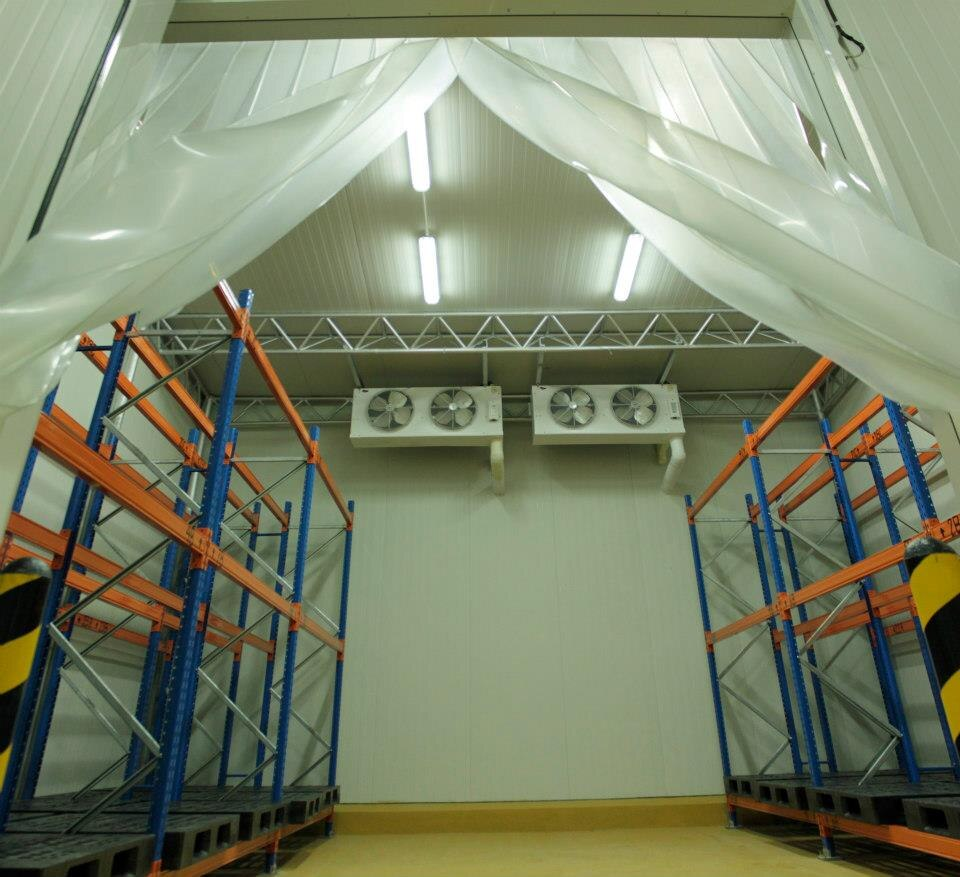

Check a cold-room temperature probe and alarm
Use a second thermometer to distinguish a warm room from a sensor, cable or profile error.
Find the display, the sensing point and the cooling output
A cold-room controller reads a probe and decides when to request cooling, run fans or defrost. A nearby display can show the wrong temperature if a sensor is mislocated, a cable is broken or a replacement probe has a different curve. A correct high reading can instead mean the room really is warm. Begin with a reference reading near the control probe and leave the equipment settings as found until the discrepancy is understood.

Photo by Ostar dcsf, resized. Original photo · CC BY-SA 3.0.


Photo by Ansgar Hellwig. Original photo · CC BY-SA 2.0 de.

Watch how a cold room is laid out · Follow the room and cooling equipment in the Danfoss walkthrough. Then open the ERC 214 photo and find the display and buttons. The manual lets you look up the supported input type and alarm settings for that controller. Danfoss cold-room walkthrough · ERC 214 product photo · ERC 214 installation guide.
Measure a passive probe at two stable temperatures
Use a known 10 kΩ NTC with a published B value near 3435 K, a multimeter, a reference thermometer, a sealable dry bag for a non-immersible element, and a container with a cool-water bath. Keep electronics and meter dry. Measure the disconnected sensor and reference together in room air, then at a cooler stable point. An immersion-rated probe may go into the bath. Keep a non-immersible probe dry and allow extra time to settle.
For the second part, connect a 10 kΩ fixed resistor from regulated 5 V to a test point and the NTC from that point to 0 V. Measure the test point in both states. Unplug the trainer before changing leads. The figures below are illustrative for a 3435 K curve, 10 kΩ at 25 °C. Use the actual probe’s resistance table to judge a customer part.
For a labelled training alarm, define warm as a measured voltage below 3.23 V for 30 seconds, and treat near-rail results as wiring faults first. Start with the cold value, then warm the sensor and time it. Log reference temperature, voltage, alarm time and recovery. Apply that logic on paper or on a low-voltage logger. The threshold illustrates roughly 10 °C with this divider and carries no storage recommendation.
| Bench state | Disconnected sensor resistance | Powered trainer test point | What to log |
|---|---|---|---|
| 25 °C | 10.0 kΩ nominal | 2.50 V | Warm example |
| 5 °C | About 22.9 kΩ | About 3.48 V | Cold example |
| Open training cable | OL | Near 5 V | Raise sensor fault even though the voltage appears colder. |
| Shorted training cable | Near 0 Ω | Near 0 V | Raise sensor fault before assessing temperature. |
Handover a temperature complaint
Log timestamps, temperature at the probe and at the agreed storage point, door opening and the cooling and defrost icons. If the reference and display agree while the room remains warm, pass the record to the refrigeration technician. If the display disagrees, the technician checks the isolated probe, harness and model-specific profile. Start with food, retail or workshop deployments through a refrigeration partner. Have the responsible contractor sign off alarm, delay, recovery and unloading or stock decisions. Where a traceable calibration certificate is requested, use a lab with the required parameter and range in its accredited scope. Find a laboratory through NABL.